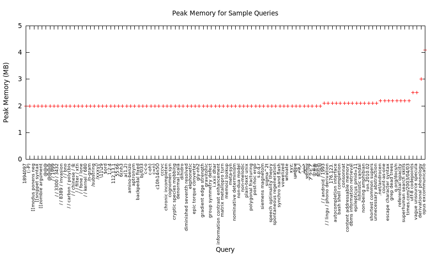

Search engines normally index words, not substrings. URLs or other kinds of data strings are less likely to be recalled completely than common words. Substring indexing guarantees all recalled strings are valid for searching, not only whole words.
Substring search is appropriate whenever information can be retrieved efficiently using non-word or very specific search strings. It may be the only way to find information when the recalled strings are not words.
Search engine indexes are not designed to accommodate substring search. Modifying the token analyzer to output n-grams instead of words multiplies the index size, impacting keyword search and indexing performance. Therefore we suggest implementing substring search as a separate subsystem, such as Grepmaster, optimized for the purpose.
Search engines typically employ a disk based index, enabling index size to exceed physical memory. A substring index should also be disk based to avoid capacity limitations and contain costs.
Research on disk based substring indexes is ongoing. Techniques in the literature suffer from extraordinary memory requirement, poor search performance, and low indexing rate. A more efficient index is needed.
Grepmaster establishes a new level of cost-performance:
Search peak memory use is less than 5 MB, typically 2 MB.
Indexing memory requirement is a fixed amount, by default 3.4 GB.
Over 100 GB of indexed text is searchable at interactive rates on a single CPU core.
Indexed substring search on disk outperforms linear search in memory by orders of magnitude, at one-third the cost.
Index storage cost is roughly $2/GB of text.
Maximum indexing rate on i5 2500k processor @3.3Ghz is 36 MB/sec, or 129 GB per hour.
No hard limit on index size except disk space.
Untapped Potential of Substring Search
For Grepmaster the term substring search means case insensitive exact string matching in a fixed size window.
User interaction patterns have shifted from passive media consumption toward keyword searching document collections. Due to high cost substring search has been left behind, mostly limited to matching visited URLs in the address bar of the web browser.
Substring searching large volumes of text is similar to searching in a text editor. URLs, unique identifiers, data strings, words, and combinations of them, are all candidates for ad hoc navigation.
Recall adapts to available means for search and retrieval. Having the ability to search any substring increases the likelihood that fragments of landmark strings will be recalled. It provides additional security that information can be accessed the most direct way, through the path of least resistance.
Substring search picks up where personal recall overtakes probabilistic keyword search.
Web Interface
The web interface is a fusion of grep in a terminal, text viewing, and the standard one box search interface.
Grepmaster could be integrated with the web front end for standard search, sharing the same input box, using a modal switch such as a special key.
Disk Based Substring Index
Disk based search performance is primarily limited by disk reading. For the same i/o cost, fewer reads with larger average size is faster than the the other way around.
Our strategy is to transfer the most burden from expensive resources, such as CPU or memory to the lowest cost resource, which is disk. We optimize for cost-performance rather than absolute performance.
The redundancy from indexing overlapping n-grams trades larger index size for greater locality of reference. Fewer reads and CPU cycles are needed to process queries than smaller high entropy indexes with more randomly distributed, or compressed, postings. Plus, indexes optimized for space efficiency may take up to one order of magnitude longer to build.
The final result is the disk based index outperforms by a large factor linear search in memory — at lower cost.
The cost of SSD is about 13X lower than DDR3 memory ($0.45/GB vs $6.00/GB).
About 4.5X (1 text + 3.5 index) more space is required than linear search in memory.
Therefore the media cost of the index is 4.5 / 13 = 35% of linear search in memory.
Grepmaster performs like a cluster for the price of an SSD.
Performance Tests
One hundred selected queries are used to roughly characterize performance.
Summary:
Average indexed search rate after clearing disk cache is 83 GB/sec.
Linear search rate in memory is 4672 MB/sec.
Linear search rate on SSD is 536 MB/sec.
Consequently, the disk based substring index gains roughly 17X the performance of linear search in memory and 155X the performance of linear search on SSD.
Testing environment details and further explanations are in the appendix.
1. Response Time
The data points are obtained by timing the batch of sample queries on 42 GB of Wikipedia articles duplicated 1 - 5 times, up to the capacity of our 1 TB SSD. Disk cache reduces the response time about one-third of a second for all sizes.
2. Search Rate
Search rate is the data size divided by search time.
The following graph shows the sample distribution of search rate on a log(2) scale. Search rate with disk cache cleared is used as it is less dependent on environmental factors.
3. Memory Use
The following graph shows the distribution of peak memory use for the sample queries. The maximum value is 4.1 megabytes. Many commodity CPUs (such as our i5 2500k) have larger cache than the peak memory used.

Indexing Procedure
Indexing consists of the following steps, executed from a shell script:
A Unix find command generates the list of documents to be processed.
Output from step 1 is piped into a java/Apache Tika application which converts the documents and outputs paths and contents into a UTF-8 encoded dump file.
Indexer runs on the dump generated in step 2.
If a dump file exists the new (incremental) dump is merged with the old one.
Indexing is unicode aware. All code points are supported.
Roadmap
Following is an outline of planned development.
1. Incremental Index Update
Changes to document collections normally occur slowly. The index would be divided into independent blocks. Few blocks normally change over an update interval, so only a small fraction need rebuilding. When changes occur less frequently than the update interval the updates are nearly real time.
Suppose the block size is the default 1 GB, and one block changed over an update cycle. At a 29 MB/sec indexing rate it takes 36 seconds to rebuild the block and synchronize the index.
2. Data Reduction
Grepmaster by default indexes everything, so existence or nonexistence of matching patterns is known with certainty. Data reduction could increase space efficiency, and improve search and indexing performance without compromising search-ability too much:
Don't index words matching a user supplied stop word dictionary.
Only index strings matching a specified regular expression, to filter out low value strings.
Stop indexing after size-per-document limit is reached. Zero means only index the URI.
Limit options 1-3 to specified filename patterns.
3. Regular Expression Filtering
We propose adding regular expression filtering to the query using pipe syntax:
abc 123 | [regex]
4. Columnar Indexing for Data Tables
Grepmaster is able to index up to 64K separate fields. Files containing tabular data would have the columns separately indexed. By default patterns would match all columns, or use a positional syntax where commas indicate relative column position, such as:
col1-pattern , , col3-pattern , col4-pattern
5. Compute Clustering
Compute clustering reduces response time for large data sets. Multiple Grepmaster servers would host separate sections of the data. Queries would be sent to a cluster server which issues requests to the separate Grepmaster hosts, collects responses, and returns results merged together.
The main drawback is that it multiplies system cost. However if there is a need to interactively substring search terabytes of data, compute clustering would be an appropriate solution.
Summary
Support for large scale substring search has been constrained by high cost relative to benefits. Grepmaster balances both sides of the equation.
Interactive substring search costs as little as the price of an SSD. However for more than occasional use, hosting on a dedicated system would be advisable.
The following capabilities were never before available in a commercial product:
Disk based substring search with immediate feedback on 100+ GB data.
Drill-down substring searches. Fields are independently indexed.
To be added soon:
Near real time update of the disk based substring index.
All documents have varying amounts of non-word data, at least the URL. Grepmaster expands the scope of the classic search box from words to all of the data.
Significant time and money are invested deploying and maintaining search engines. Substring indexing further leverages the value of the data by making it comprehensively searchable.
With instant feedback substring search becomes a new kind of power tool for large scale information retrieval.
Appendix—Performance Testing Details
Testing system components:
Intel i5 2500k @3.3 Ghz
Asrock Z77 Pro4 motherboard
Samsung 840 EVO 1 TB
LSi 9207-8i Host Bus Adapter
8 GB DDR3 1600 Mhz
OS is Ubuntu 12.04 64-bit with default kernel parameters.
Matching window is the default 500 characters.
Data source:
https://dumps.wikimedia.org/enwiki/20150602/enwiki-20150602-pages-articles.xml.bz2
Total size of articles extracted from wikipedia dump: 41771644776 bytes (42 GB)
GNU grep was recording suspiciously low search rates for SSD and memory. After some experimentation we found that a simpler memchr() based string matching is significantly faster than the deterministic finite automaton (DFA), at least for exact matching on recent Intel processors.
SSD Search Rate MB/Sec
Memory Search Rate MB/Sec
GNU Grep
393
1335
memchr() based
536
4672
The STREAM benchmark reports 15,500 MB/sec memory bandwidth on our system. The memchr() based linear search rate is about one-third the memory bandwidth, while GNU grep is less than one-tenth.
The non-indexed search rates put the indexed search rates into perspective. Over one order of magnitude higher performance can be obtained for the price of disk space and indexing time.
// The following routine implements substring search based on the
// memchr() builtin. It scans for the 1st character using the
// native byte search machine instruction then compares the rest.
// This simpleminded approach appears to trounce GNU grep's DFA
// for exact matching on recent (ca 2011) Intel processors.
//
// The purpose of this exercise is to support our claim for 17X
// performance gain of the disk based index vs linear search in
// memory with accurate measurements.
char *memchr_based_strnstr(char *haystack,
size_t haystack_len,
char *needle,
size_t needle_len)
{
char byte_1st, byte_2nd, *end, *needle_plus_2, needle_len_minus_2, *p;
if (needle_len > haystack_len)
return NULL;
byte_1st = needle[0];
byte_2nd = needle[1];
if (needle_len <= 2) {
// Search for 1st matching byte
if (!(p = memchr(haystack, byte_1st, haystack_len)))
return NULL;
// Check if 2nd byte doesn't match
if (needle_len == 2 && p[1] != byte_2nd)
return NULL;
return p;
}
needle_plus_2 = needle + 2;
needle_len_minus_2 = needle_len - 2;
end = haystack + haystack_len - needle_len;
for(p = haystack; p <= end;) {
// Search for 1st matching byte
if (!(p = memchr(p, byte_1st, end - p)))
return NULL;
else {
// Check if 2nd byte doesn't match
if (*++p != byte_2nd)
continue;
// Check if the remaining bytes match
else if (!memcmp(p + 1, needle_plus_2, needle_len_minus_2))
return p - 1;
}
}
return NULL;
}